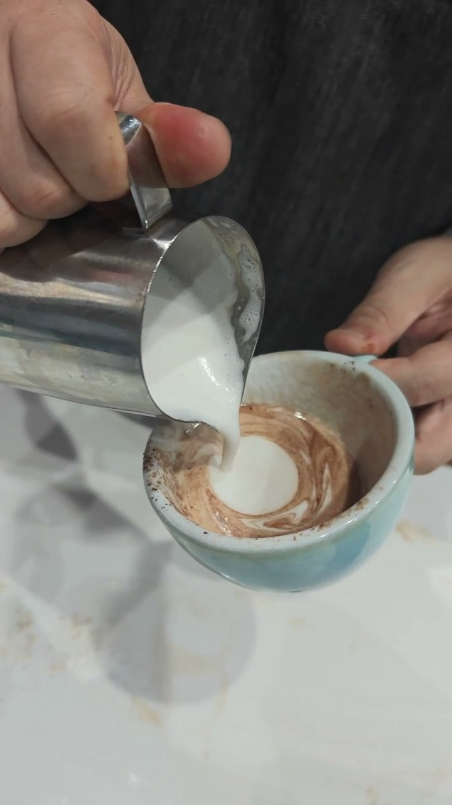
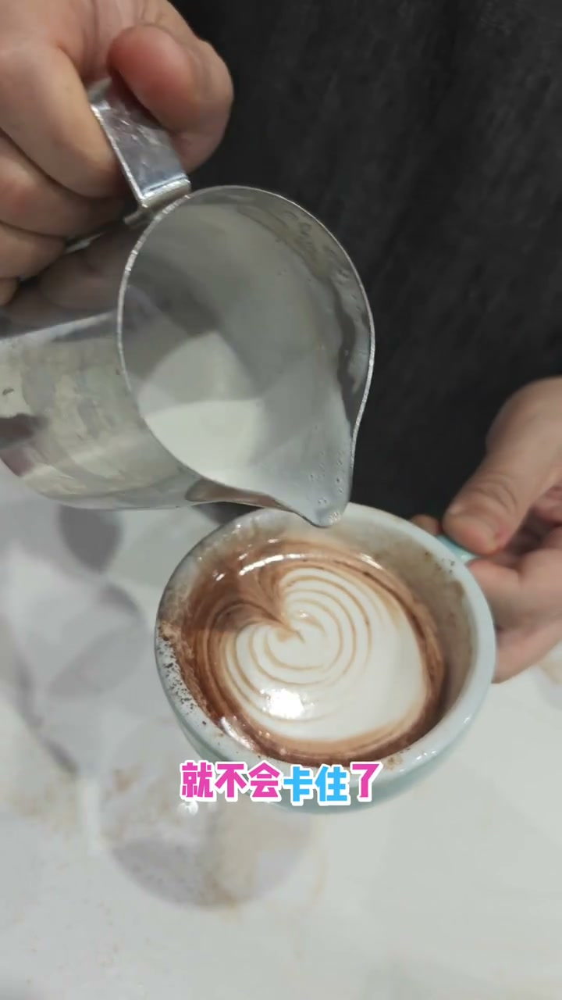
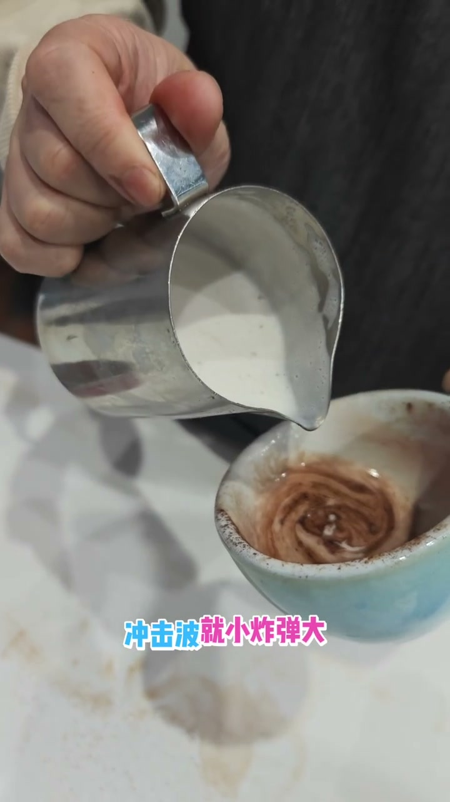

流速不够导致奶泡卡住
查看原视频核心原理
- 奶泡卡住摆不动的原因：流量太小、冲击力不够
- 加大流量→产生冲击力→奶泡被推出去→自然扩散
- 流体冲击力 = 海浪/冲击波原理：力度越大扩散越远
问题：小流量导致奶泡卡住
倒的奶泡太少，流量太低，奶泡倒出来后没有足够的冲击力把它推开。奶泡就卡在注入点附近，变成一片白色，怎么摆都摆不开。

解决：加大流量产生冲击力
把流量加倍放大——奶泡冲出去后再结合摆动，就不会卡住了。冲击力越大，奶泡扩散越远。甚至不用摆，仅靠冲击力就能产生自然的纹路扩散。

物理类比
海滩上风大→海浪更大、冲得更远。爆炸物大→冲击波大。同样的道理：倒奶的流量越大→冲击力越大→奶泡往外扩散越远。小的冲击力只能产生小波纹，大的冲击力产生大波纹——再配合摆动，让纹路向四面八方扩散。

核心逻辑：先有冲击力把奶泡推出去（流量），再用摆动把扩散方向引导成左右往复
文字转录（16段）
以下内容按 Whisper 原始分段完整呈现，可能包含识别误差。
- [0:00]等一下卡住的问题啊 卡住就摆不动了 你看一下 我们这样这样就会卡住的
- [0:06]卡住主要是这个倒的泡太少了 倒出来太少了 倒的流量大就不会卡住了
- [0:11]卡住就变成一片白色 你看我现在把流量加倍
- [0:17]流量加倍它滑出去再摆动就不会卡住了
- [0:22]来是靠冲力冲击波
- [0:28]所以你看我现在的 比如说我现在一个
- [0:33]冲击力很小 波纹就小 冲击力大 波纹就大
- [0:39]你去海滩看到风大的时候风 那个海浪会更大 或者说
- [0:44]或者说炸弹呢 冲炸弹小 冲击波就小 炸弹大 炸弹大 冲击波就大
- [0:50]冲击波就让你要怕往外走
- [0:55]所以我们倒出来会有一个冲击力 让泡往外扩散 你看这种泡是不扩散 这种泡就扩散 你看扩散
- [1:01]我都不摆 都会有自然的纹路 如果我倒的很慢 刚才看到不止卡在原地
- [1:06]倒的快再结合摆动才有意义 才是左右扩散 而且会扩散的更远
- [1:12]因为你倒的更轻 倒的更小的时候 它
- [1:17]不会跑得更远 倒的快 它力度一大就跑得更远
- [1:23]跑的这边更远 然后你再摆一下就跑这边 又跑这边 它就四周都扩散出去了